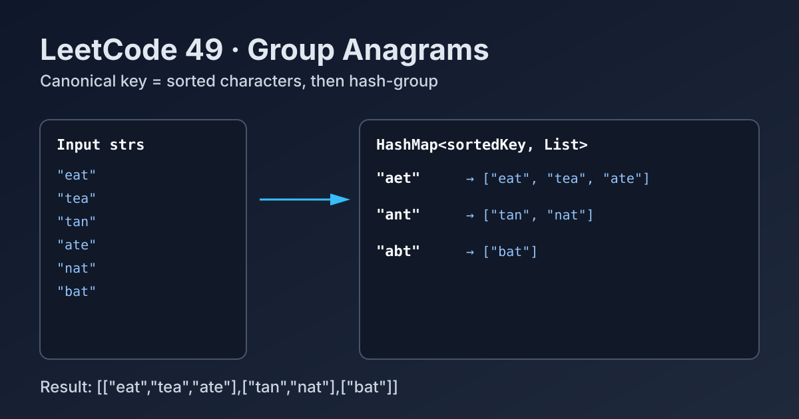

LeetCode 49: Group Anagrams (Hash Map + Canonical Key)
LeetCode 49StringHash TableSortingToday we solve LeetCode 49 - Group Anagrams.
Source: https://leetcode.com/problems/group-anagrams/

English
Problem Summary
Given an array of strings strs, group the anagrams together and return the grouped lists in any order.
Key Insight
All anagrams share the same canonical representation. A common canonical key is the sorted version of each word, such as "eat" -> "aet" and "tea" -> "aet".
Brute Force and Limitations
Brute force compares every pair of strings and checks if they are anagrams. This needs repeated frequency checks and merging logic, often leading to around O(n^2 * k) or worse. It is unnecessary once we use a hash map key.
Optimal Algorithm Steps
1) Create a hash map: key -> list of strings.
2) For each word, compute its key by sorting characters.
3) Append the word to the list under that key.
4) Return all map values as the final groups.
Complexity Analysis
Let n be number of strings and k be max string length.
Time: O(n * k log k) (sorting each word).
Space: O(n * k) for map storage and keys.
Common Pitfalls
- Forgetting that output order does not matter, then over-engineering sorting of groups.
- Using mutable arrays as map keys directly (language-specific issues).
- Missing empty string edge case.
- Rebuilding list objects incorrectly and overwriting previous groups.
Reference Implementations (Java / Go / C++ / Python / JavaScript)
class Solution {
public List<List<String>> groupAnagrams(String[] strs) {
Map<String, List<String>> map = new HashMap<>();
for (String s : strs) {
char[] chars = s.toCharArray();
Arrays.sort(chars);
String key = new String(chars);
map.computeIfAbsent(key, k -> new ArrayList<>()).add(s);
}
return new ArrayList<>(map.values());
}
}func groupAnagrams(strs []string) [][]string {
m := make(map[string][]string)
for _, s := range strs {
b := []byte(s)
sort.Slice(b, func(i, j int) bool { return b[i] < b[j] })
key := string(b)
m[key] = append(m[key], s)
}
res := make([][]string, 0, len(m))
for _, v := range m {
res = append(res, v)
}
return res
}class Solution {
public:
vector<vector<string>> groupAnagrams(vector<string>& strs) {
unordered_map<string, vector<string>> mp;
for (string s : strs) {
string key = s;
sort(key.begin(), key.end());
mp[key].push_back(s);
}
vector<vector<string>> res;
res.reserve(mp.size());
for (auto& [k, group] : mp) {
res.push_back(move(group));
}
return res;
}
};from collections import defaultdict
from typing import List
class Solution:
def groupAnagrams(self, strs: List[str]) -> List[List[str]]:
groups = defaultdict(list)
for s in strs:
key = "".join(sorted(s))
groups[key].append(s)
return list(groups.values())var groupAnagrams = function(strs) {
const map = new Map();
for (const s of strs) {
const key = s.split('').sort().join('');
if (!map.has(key)) map.set(key, []);
map.get(key).push(s);
}
return Array.from(map.values());
};中文
题目概述
给定字符串数组 strs，请把所有字母异位词分组，并返回结果（顺序任意）。
核心思路
异位词的字符组成相同，因此可以给每个字符串构造同一个标准键。最常见做法是把字符串排序后作为 key，例如 "eat" 和 "tea" 排序后都变成 "aet"。
暴力解法与不足
暴力法需要两两比较字符串是否为异位词，并维护分组状态，复杂度和实现复杂度都偏高，不适合面试场景中的高效解法要求。
最优算法步骤
1）建立哈希表：key -> 字符串列表。
2）遍历每个字符串，排序得到 key。
3）把原字符串追加到 key 对应分组中。
4）最终返回哈希表中的所有 value。
复杂度分析
设字符串个数为 n，单个字符串最大长度为 k。
时间复杂度：O(n * k log k)（每个字符串排序）。
空间复杂度：O(n * k)（哈希分组存储）。
常见陷阱
- 误以为输出分组顺序必须固定，导致多做无关排序。
- 直接把可变结构当哈希键使用。
- 忽略空字符串边界。
- 错误覆盖已有分组，而不是追加元素。
多语言参考实现（Java / Go / C++ / Python / JavaScript）
class Solution {
public List<List<String>> groupAnagrams(String[] strs) {
Map<String, List<String>> map = new HashMap<>();
for (String s : strs) {
char[] chars = s.toCharArray();
Arrays.sort(chars);
String key = new String(chars);
map.computeIfAbsent(key, k -> new ArrayList<>()).add(s);
}
return new ArrayList<>(map.values());
}
}func groupAnagrams(strs []string) [][]string {
m := make(map[string][]string)
for _, s := range strs {
b := []byte(s)
sort.Slice(b, func(i, j int) bool { return b[i] < b[j] })
key := string(b)
m[key] = append(m[key], s)
}
res := make([][]string, 0, len(m))
for _, v := range m {
res = append(res, v)
}
return res
}class Solution {
public:
vector<vector<string>> groupAnagrams(vector<string>& strs) {
unordered_map<string, vector<string>> mp;
for (string s : strs) {
string key = s;
sort(key.begin(), key.end());
mp[key].push_back(s);
}
vector<vector<string>> res;
res.reserve(mp.size());
for (auto& [k, group] : mp) {
res.push_back(move(group));
}
return res;
}
};from collections import defaultdict
from typing import List
class Solution:
def groupAnagrams(self, strs: List[str]) -> List[List[str]]:
groups = defaultdict(list)
for s in strs:
key = "".join(sorted(s))
groups[key].append(s)
return list(groups.values())var groupAnagrams = function(strs) {
const map = new Map();
for (const s of strs) {
const key = s.split('').sort().join('');
if (!map.has(key)) map.set(key, []);
map.get(key).push(s);
}
return Array.from(map.values());
};
Comments